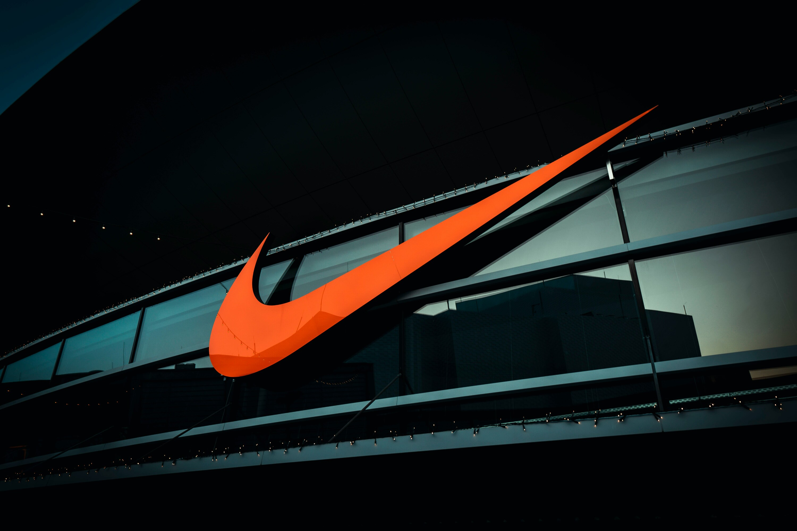
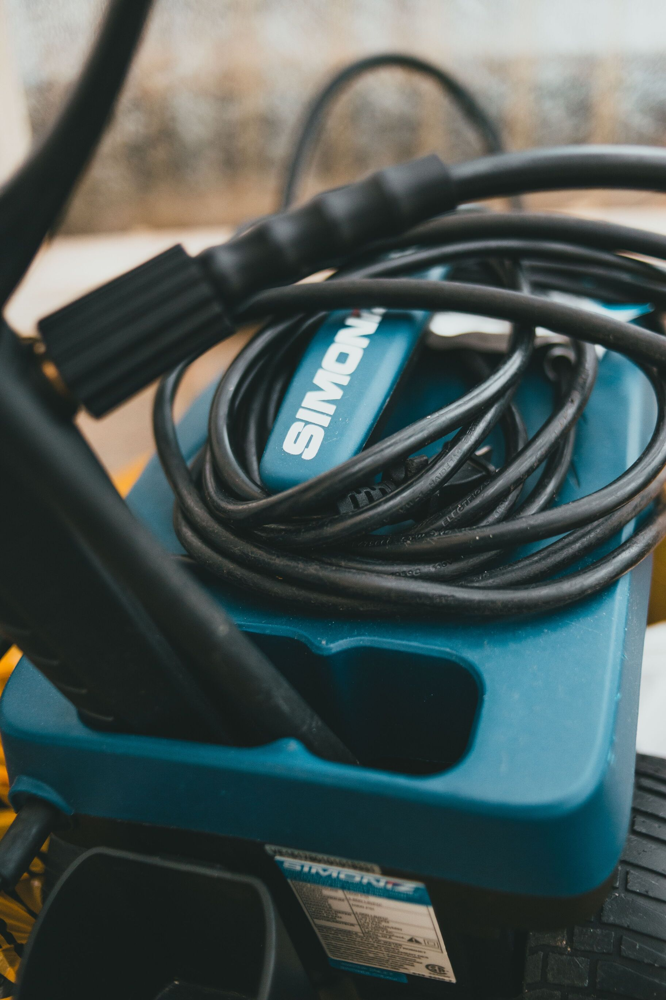
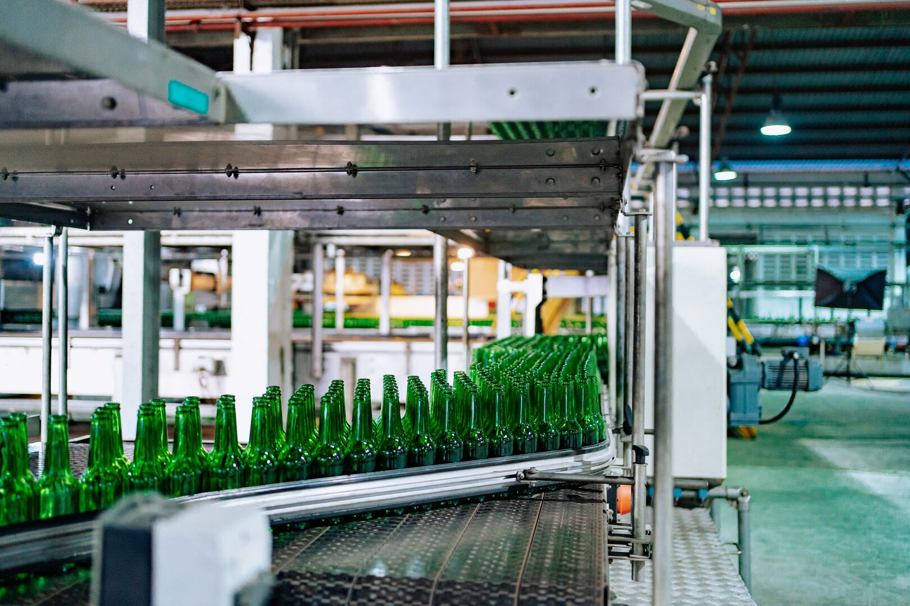
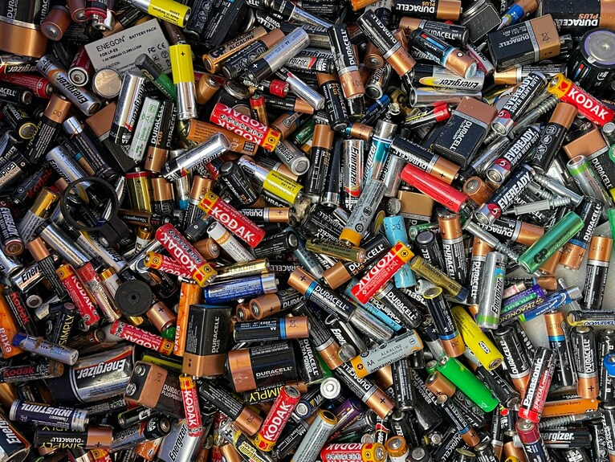

Tussen 2021 en 2024 werkte ik regelmatig als jobstudent bij Nike tijdens de weekendnachtshifts. Mijn belangrijkste taak was orderpicking. Hierbij verzamelde ik de juiste producten in het magazijn op basis van binnenkomende bestellingen. Vervolgens werden deze bestellingen klaargemaakt voor verzending naar de klant.
Door deze ervaring leerde ik nauwkeurig en efficiënt te werken en verantwoordelijkheid te nemen voor mijn taken.

Tussen 2023 en 2025 werkte ik elke vrijdagavond en -nacht als jobstudent bij GOM als industrieel reiniger in het bedrijf Sus Campiniae. Dit is een varkensslachterij waar GOM instond voor de industriële reiniging van de machines en verschillende ruimtes.
Mijn taken bestonden voornamelijk uit het reinigen van de werkruimtes. Hierbij spoot ik de ruimtes in met reinigingsmiddel en spoelde ik deze vervolgens grondig af met water. Op deze manier zorgde ik ervoor dat de ruimtes en machines proper waren en aan het begin van de volgende werkweek opnieuw gebruikt konden worden.
Door deze job leerde ik nauwkeurig en zelfstandig te werken en het belang van hygiëne en veiligheid op de werkvloer te respecteren.

Ik werkte gedurende één maand als interim machine operator bij AB InBev, een internationale bierbrouwerij met bekende merken zoals Jupiler en Stella Artois. Als machine operator was ik verantwoordelijk voor het bedienen en controleren van twee productiemachines.
De eerste machine zorgde ervoor dat meerdere blikken samen werden verpakt met een plastic folie. De tweede machine plaatste kartonnen bodems onder de verpakte bierpakken.
Naast het bedienen van de machines voerde ik elk uur kwaliteitscontroles uit. Hierbij controleerde ik onder andere of de vervaldatum correct op de blikken en verpakkingen stond en of er geen beschadigingen aanwezig waren. Daarnaast controleerde ik de werking van het automatische uitstootsysteem van de machines. Dit systeem zorgt ervoor dat verpakkingen automatisch worden verwijderd wanneer er bijvoorbeeld een blik ontbreekt of wanneer er te veel blikken in een verpakking zitten.
Deze ervaring heeft mij geleerd om nauwkeurig en verantwoordelijk te werken en om snel in te grijpen wanneer er zich een probleem met een machine of verpakking voordoet.

Ik werkte gedurende drie maanden als interim machine operator bij Energizer, een fabrikant van batterijen. Ik was verantwoordelijk voor het bedienen en controleren van een verpakkingsmachine die individuele batterijen samenvoegde en verpakte in verschillende formaten, zoals verpakkingen van 9 of 12 batterijen. Daarnaast voerde ik elk uur een kwaliteitscontrole uit. Hierbij controleerde ik de batterijen en verpakkingen op eventuele beschadigingen. Ook controleerde ik of de vervaldatum en het land van productie correct vermeld stonden op zowel de batterijen als de verpakkingen.
Verder was ik verantwoordelijk voor het registreren van fouten en storingen tijdens het productieproces. Hierdoor kon het bedrijf nauwkeurig opvolgen wanneer er vertragingen ontstonden en wat de oorzaak hiervan was. Door deze ervaring heb ik geleerd om nauwkeurig en verantwoordelijk te werken, kwaliteitscontroles correct uit te voeren en problemen tijdens een productieproces duidelijk te registreren.